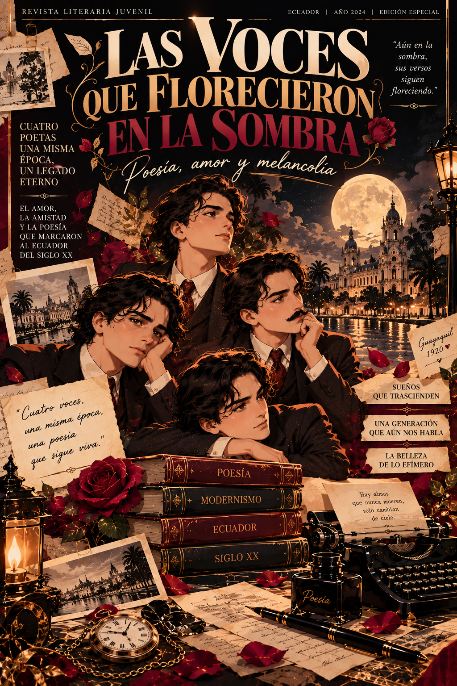
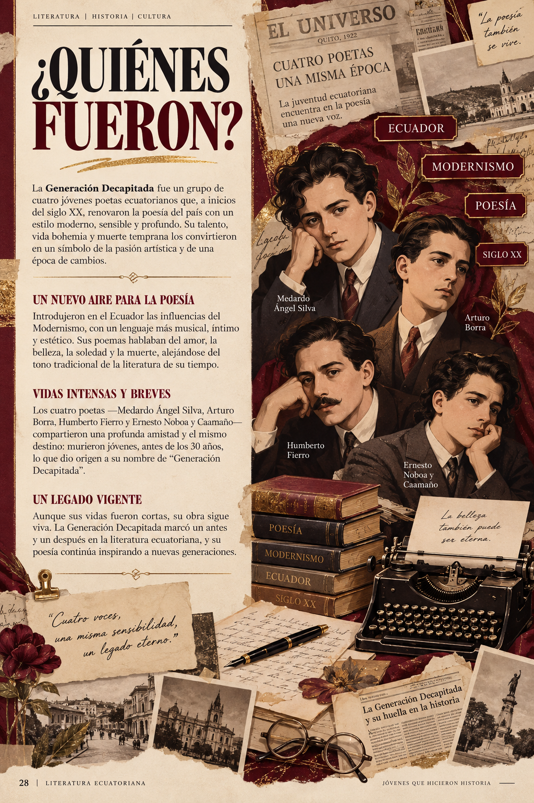
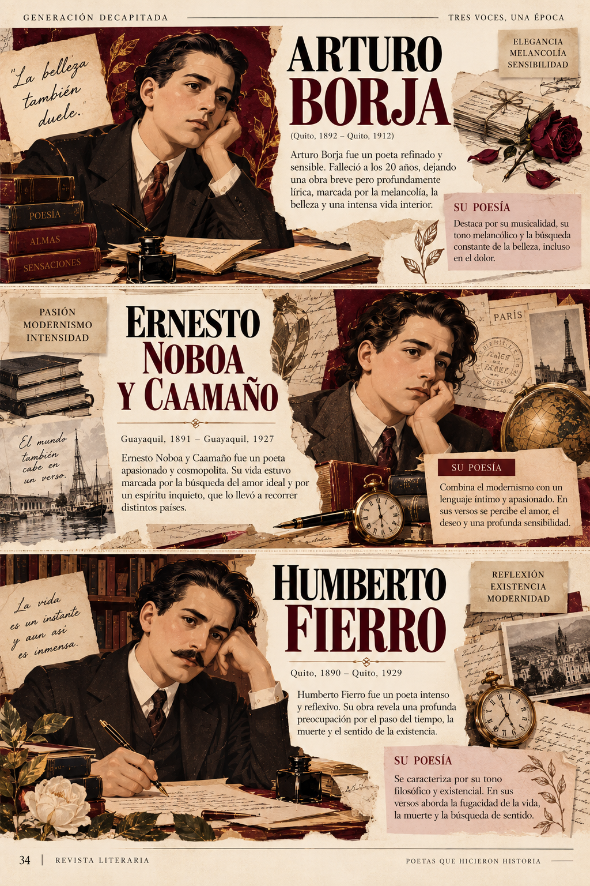
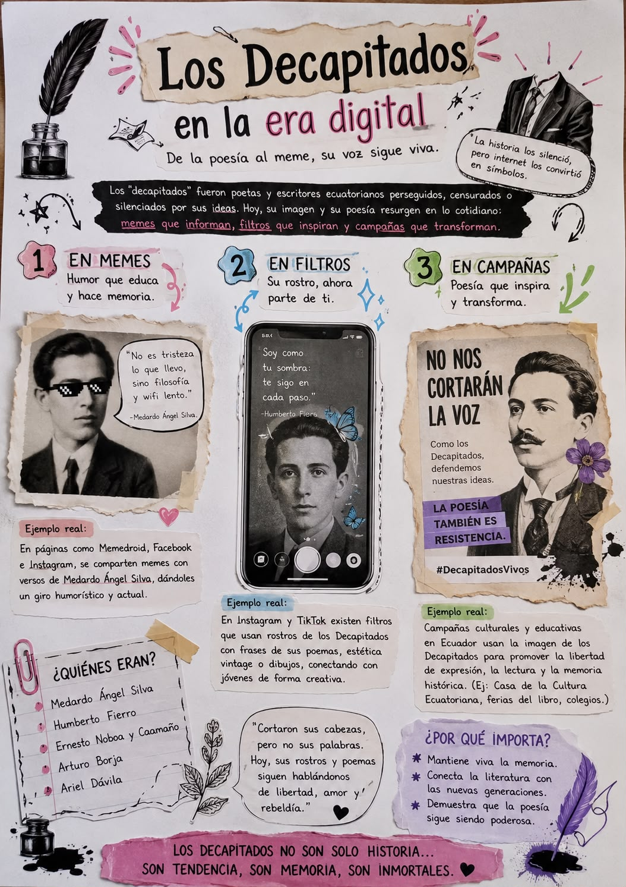
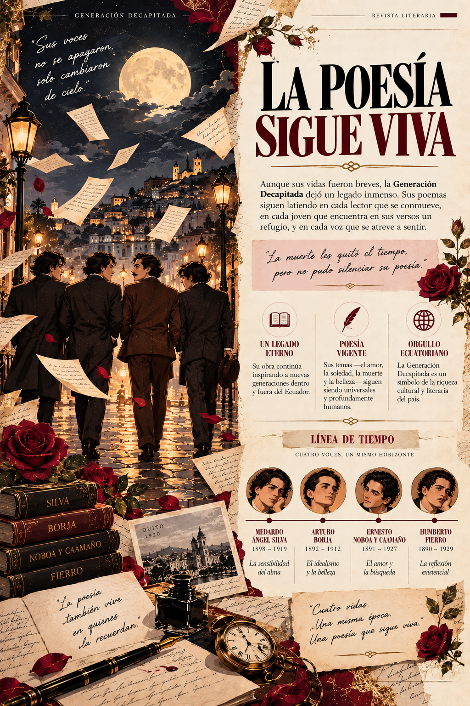

Spot Literario: Una Historia en Imágenes
Un homenaje visual a la intensidad y la memoria de la Generación Decapitada.
CONVERSACIÓN IMPOSIBLE
La Voz del Más Allá:
Entrar a la entrevista
Abrir experiencia
MEDARDO ÁNGEL SILVA · GUAYAQUIL, 1898–1919
La Voz del Más Allá:
Medardo Ángel Silva
El poeta responde desde la eternidad en una recreación nacida de la Inteligencia Artificial.

REFLEXIÓN FINALUna llama que no se apaga
La Generación Decapitada no fue simplemente una coincidencia cronológica de cuatro jóvenes brillantes; fue el grito desgarrador de una época que transitaba entre la nostalgia colonial y el vértigo de la modernidad. En medio de un Ecuador marcado por la incomprensión y las convenciones asfixiantes, Medardo Ángel Silva, Arturo Borja, Ernesto Noboa y Caamaño y Humberto Fierro encontraron en la cadencia del verso modernista el único refugio capaz de contener la intensidad de su dolor y su insaciable sed de belleza.
Su despedida voluntaria y prematura antes de cumplir los treinta años no fue una capitulación ante la vida, sino la consecuencia trágica de sentir el mundo con una hondura que desbordaba su tiempo. Supieron transformar la influencia de los poetas malditos franceses en una voz genuinamente nuestra, arraigada en las campanas coloniales de Quito y la brisa melancólica del río Guayas, legándonos estrofas donde el amor, el hastío y la muerte dialogan con una pureza conmovedora.
«La verdadera poesía no busca respuestas fáciles, sino el coraje de mirar de frente las sombras del alma y arrancarle a la oscuridad una chispa de inmortalidad.»
Leerlos hoy es un acto de rebeldía íntima contra la prisa, la frialdad y el olvido de nuestros días. Nos recuerda que la fragilidad no es flaqueza, sino la prueba más lúcida de nuestra humanidad. Sus voces no se apagaron con su partida: siguen encendidas en cada lector que se estremece con sus líneas, demostrando que mientras exista quien anhele la belleza con devoción, su poesía florecerá eternamente en la penumbra.